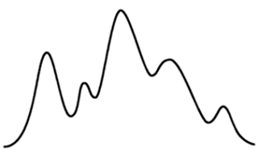
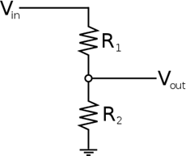

Los sentidos del ser humano perciben al mundo de forma analógica, tal como es el mundo. Por ejemplo, el ser humano puede diferenciar, en el espectro de la luz, entre el negro y el blanco una infinidad de colores, de forma contraria a lo que sería una respuesta digital, negro o blanco, incluso si el hombre percibiera los colores en escalas de grises ésta ya sería una respuesta analógica.

Digital vs. analógico
Cuándo los datos son transmitidos usando métodos analógicos, una cierta cantidad de "ruido" entra dentro de la señal. Esto puede tener diferentes causas: datos transmitidos por radiofrecuencia pueden tener una mala recepción, sufrir interferencias de otras fuentes o levantar ruidos de fondo. Los pulsos eléctricos que son enviados por cableados pueden ser atenuados por la resistencia de los mismos, y dispersados por su capacitancia, y variaciones de temperatura pueden acrecentar o disminuir estos efectos. Cualquier variación puede proveer una gran cantidad de distorsión en una señal analógica. La consideración principal típicamente es el costo del sistema, pero cada aplicación tendrá sus requisitos específicos. Si los costos todavía no reúnen el objetivo para la aplicación, todos los demás atributos son secundarios. Los sistemas se deben diseñar para mantener la funcionalidad necesaria para cada aplicación a un costo adecuado.
Algunas cantidades físicas de tipo analógico:
- Iluminación: Total oscuridad a total intensidad de la luz solar, pasando por toda la gama y sutilezas de todos los colores.
- Sonido: Variaciones analógicas en amplitud y frecuencia.
- Posición: Giro, inclinación.
- Desplazamiento: Distancia a un punto.
- Presión: Desde la presión de una pluma a muchas toneladas por metro cuadrado.
- Flexión.
- Inclinación.
- Aceleración: Cambios en la velocidad.
- Temperatura.
- Humedad.
- Magnetismo.
Para medir cada una de estas cantidades se han desarrollado diferentes tipos de sensores:
- Iluminación: Fotoresistores, fototransistores, fotodiodos, infrarrojos.
- Sonido: Micrófonos de carbón, capacitor, magnéticos, piezoeléctricos, etc.
- Posición: Potenciómetros, FSR, ultrasonidos, efecto Hall.
- Desplazamiento: Sonares, potenciómetros slide, galgas extensiométricas, efecto Hall.
- Presión: FSR, piezoeléctricos.
- Flexión: FSR.
- Inclinación: Acelerómetros. Aceleración: Acelerómetros.
- Temperatura: Termopares, termostatos, termistores.
- Humedad: Sensores capacitivos.
- Magnetismo: Pick ups de guitarras eléctricas, efecto Hall.
En la mayoría de los casos para poder conectar estos sensores a nuestras interfaces es necesario (según sus especificaciones), hacer un acondicionamiento de la señal, de esta forma ya podremos leer y manipular la información desde nuestro sistema digital.
Los métodos de entrega de datos de los sensores al microcontrolador suelen ser por:
- Variación de voltaje.
- Variación de la resistencia.
- Variación del ancho de un pulso.
- Envío de los datos de forma serial.
Cambios en la resistencia, el divisor de voltaje.
Muchos de los sensores descritos anteriormente (FSR'S Force Sensing Resistors) cambian su resistencia al ser manipulados. Para poder leer estos cambios en la resistencia, los pondremos en un circuito (divisor de voltaje) y pasaremos una corriente a través de ellos de tal forma que podemos medir el cambio de voltaje resultante sobre el sensor, ya hecha la medición tendremos que convertir ese voltaje a un valor digital, para este trabajo se utiliza el componente electrónico llamado conversor analógico digital (ADC).
Divisor de voltaje:

Potenciómetro:

Circuito de fotorresistencia:

Una entrada analógica - a diferencia de una entrada digital - permite leer un rango de valores. Estos valores representan voltaje, pero dentro del microcontrolador pueden ser representados por un rango de valores enteros, los cuales pueden ir de 0 a 255 (8bits) o de 0 a 1024 (10 bits) etc., esto depende del tipo de procesador que estemos utilizando, por eso es muy útil obtener las especificaciones del micro y las funciones asociadas (en el lenguaje que escogiéramos) a la lectura de un puerto analógico.
La idea de un puerto analógico es leer de un puerto diferentes valores, lo cual permite tomar decisiones más amplias o interactuar con rangos que permiten realizar tareas diferentes.
Cuando pensemos en una entrada digital imaginemos un switch on/off, y cuando pensemos en una entrada analógica asociémoslo a un potenciómetro, o cualquier dispositivo cuya salida oscile entre un rango de valores (0V y 5V).
Estos dispositivos (ejemplo un lm35 - termómetro digital) alimentándolos con 5V, pueden entregar al puerto en donde se conecten un rango de valores de acuerdo a las características con las cuales el dispositivo está diseñado.
Por ejemplo, un potenciómetro permite entregar al micro un rango de voltaje que depende del voltaje con el cual esté alimentado. Un termómetro digital, entregará un voltaje de acuerdo a la alimentación del mismo y a las condiciones de temperatura a la cual esté expuesto. En cualquier caso, siempre se obtiene un voltaje asociado a la lectura del dispositivo, y a través de este voltaje podemos tomar decisiones y ejecutar tareas.
Extraído parcialmente de: http://picmania.garcia-cuervo.net/conceptos.php#CONVAD01